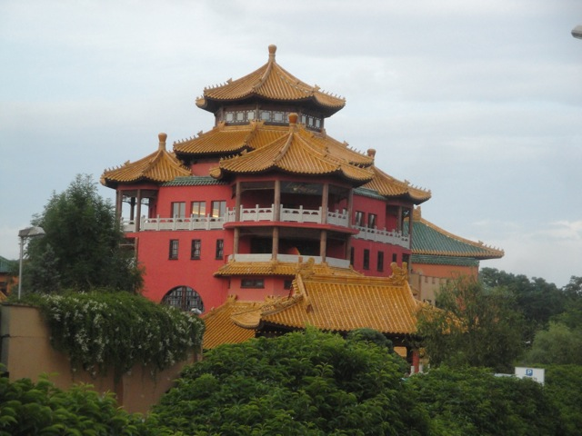
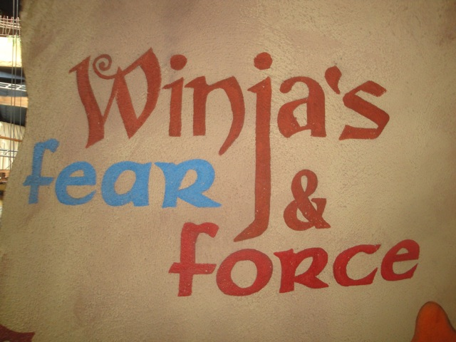
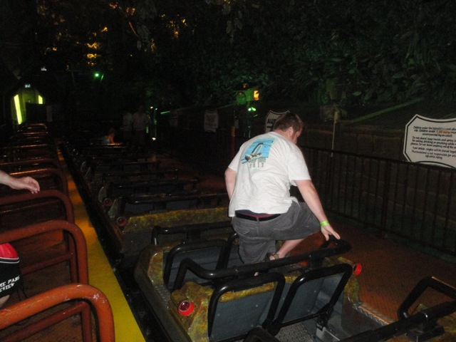
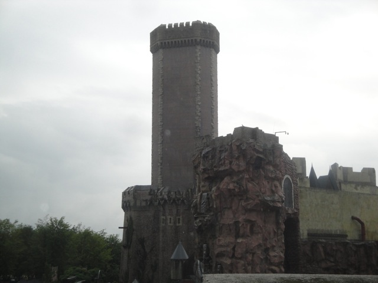
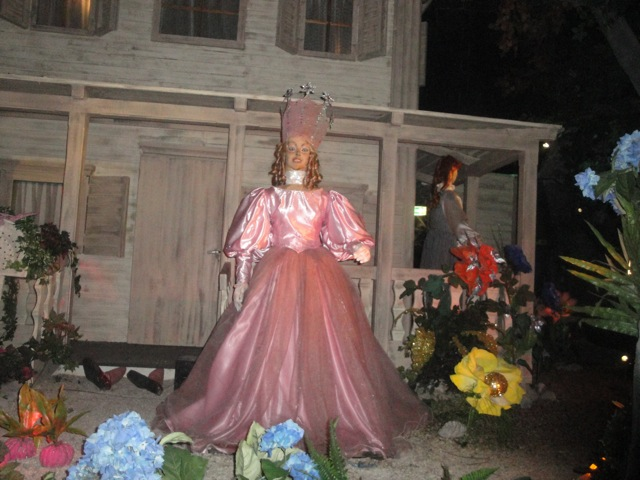

| |
Phantasialand Review

Phantasialand is a really great theme park. I know sometimes, it doesn't get too much attention thanks to it not having a huge coaster collection. I mean, don't get me wrong. Phantasialand isn't ignored or anything. But compared to Europa Park, Heide Park, or even Holiday Park (Expedition Ge Force really puts it on the map), it's not talked about quite as much. Which is a shame because Phantasialand is really a great park. Though to be fair, Phantasialand is getting a lot more attention since the additions of Taron & F.L.Y, which came after my last visit (I'm really voerdue to go back to Phantasialand). If there was ever a way to describe Phantasialand, it'd be this. Quality over Quantity. That is EASILY the best way to describe this place because Phantasialand doesn't really feel like your typical amusement park. Because yeah. Phantasialand almost doesn't really feel like a theme park. It feels like...it feels like...I don't know. Almost this sort of museum with a couple rides scattered around, except each and every single one of those rides is incredibly good (well, except for Crazy Bats). I mean, Phantasialand just puts 110% into every ride that they build. Well, at least they try. And the ones that don't work out, they're still amusing. But yeah. Phantasialand is a really great park. It not only has some great coasters, but also some really fun other rides in a wide variety of ways. Great dark rides, great water rides, really fun flat rides, and each and every ride in the park is a pleasant and unique experience. They don't bother with clones or anything along those lines. But even in their normal rides, the park will add so many special effects and incredible peices of theming that they just really turn the park into such a pleasurable experience. So while if you're a die-hard coaster nut, Phantasialand probably won't satisfy you. But if you just want a really fun day with some great rides in a very pleasurable park, then Phantasialand is a place for you.
Rollercoasters
There is a link to a review of all the Rollercoasters at Phantasialand.
Please keep in mind that there is no review of Taron, Raik, or F.L.Y because none of them existed when I last visited.
Top Coasters
Winjas Review

Really Good Coasters
Black Mamba Review

Decent Coasters
Colorado Adventure Review

Meh Coasters
Crazy Bats Review

Flat Rides
Here are the reviews of all the Flat Rides at Phantasialand. Well, let's start out with what is without a doubt, the star flat ride of the park. Mystery Castle. Now this may not seem like anything special since this is for the most part, just an indoor drop tower. What the hell can be so special about this ride? Well, it may not look like anything special, I will admit this. It is unlike any drop tower in the world. All I can tell you is to not unbuckle yourseat belt until the lights come on and they tell you to do such. Just trust me on this. You gotta ride this ride. Moving on, they also have Talacon. Now some of you may be skeptical of this ride since in all honesty, it's just a Top Spin. But in true Phantasialand spirit, they put their damndest into this ride, and as a result, this is EASILY the best Top Spin I have ever ridden and the only one that I actually have a desire to re-ride. Not only is it incredibly well themed with fire effects, mist, fog, and all that good stuff. But it also has by far the best program of any Top Spin I have ever ridden. 7 flips in a row. Yeah, you will get dizzy and you will love it. And on top of that, Top Spins are a dying breed of ride nowadays, so Talacon is extra special to ride now. Finally, I checked out their chairswings. It may not be too special, but they put on a World of Color style fountain show as the ride runs and you just might get wet by it. They also have a Vekoma Mad House, a fun house, a double carousel, and a parachute style ride.

I'm dead serious. Don't google what this ride does.
Dark Rides
All right. Now if there was any place where Phantasialand would exceed with flying colors, it'd be the dark ride department. And yeah. Phantasialand does a really freaking good job here. Again, let's start out with their obvious star dark ride. Maus de Chocolate. For those of you who know, this is one of the few rides that really takes advantage of the Toy Story Mania technology, and puts it to good use. It has a really interesting theme where basically for this ride, you are shooing away all the mice in the kicthen as you try and keep the bakery in order. Oh, and this is by far, the best smelling dark ride I have ever been on. The entire thing smells like a bakery. So you are really going to be hungry for some baked goods when you get off the ride. Bring some extra euros with you. =) All right. Let's move onto their other notable dark ride, Hollywood Tour. However, this dark ride is notable for different reasons than Maus de Chocolate. This is more of a...joke dark ride. I mean, don't get me wrong. I still really enjoy riding it. It's just that...you're laughing at the ride. Not with it. Hollywood Tour is sort of a tour of all the famous movies as you go around Hollywood. First, they pull the water curtain trick, and the first time I rode it, it SCARED THE LIVING SH*T out of me. But now, like the Vekoma Mad Houses, I've grown used to it. You then see crappy animatronics for several famous Hollywood films such as Jaws, Lawrence of Arabia, Tarzan, Back to the Future, and the Wizard of Oz. And mainly, it's just laughing at how fake it all is. Hey, kind of like the real Hollywood. =) Anyways, moving on. They also have a train ride called Silber Mine, which is sort of like the Calico Mine Ride from Knotts Berry Farm, if it was full of Germans pretending to be Mexicans. There's also a 3D Simulator about going to Atlantis, but I never rode that.
 Sorry Remy. No cooking for you today.
Sorry Remy. No cooking for you today.

"BRAINS!!!"
Water Rides
Phantasialand, just like everything else it does, has a fantastic water ride collection. First off, let's talk about River Quest. I'm not sure if it's their star water ride, but it's most certainly a favorite of mine. I can tell you right now. River Quest is easily my favorite rapids ride, and it's ranked pretty high on our Top 10 Water Rides List. I mean, this water ride has everything. It has a great setting along beautiful gardens and castles, it has THREE drops, all of which are incredibly fun. It has an elevator lift, a whirpool, and just a ton of great effects. And if you're worried about it not being an effective water ride, don't worry. YOU WILL GET SOAKED ON THIS RIDE!!! I AM NOT JOKING!!! But anyways, since my last visit, they have added a new water ride. They had torn out their old log flume and were in the middle on constructing their new log ride, Chiapas, when I was there. And from looking at photos of the ride, HOLY CRAP!!! THIS RIDE LOOKS INCREDIBLE!!! It totally fits in with the atmosphere of Phantasialand and really looks like it could easily make it on our Top 10 Water Rides List. I think they also have a couple other water rides, such as a boat ride or...whatever. Screw those!! River Quest and Chiapas really make Phantasialand's water ride collection stand out as one of the best of any theme park ever!!! Do not miss them!!!
 Best rapids ride ever. Do NOT miss.
Best rapids ride ever. Do NOT miss.
Dining
The dining at Phantasialand is...all right. I mean, don't get me wrong. It's really good food. Especially compared to most parks in the United States. But honestly, when compared to the other stuff at Phantasialand, and hell. Even the standards of other European Parks, the Phantasialand food seemed...not so special. The lunch I had was steak and fries. It was good, but yeah. I've definetly had better. I'm assuming there's some really tasty baked goods over by Maus de Chocolat from the smell it produces. But who knows. Maybe there's something that I'm missing.
 Hey, it's better than your typical hamburger.
Hey, it's better than your typical hamburger.
Theming and Other Attractions
Here are the reviews of all the other stuff at Phantasialand. Well, as for theming, I think I can safely say that Phantasialand gets an A+. This park is just SO well themed. For all the cool and interesting attractions, they put just as much effort into theming the rides as they do into the design themselves. In fact, I'd argue that they put MORE effort into the theming and that it's the theming that makes all those rides so great. I mean, just look at all their great rides. Winjas, it's all the special effects and crazy stuff that makes it the best spinner ever. Black Mamba, it's all the trenches and tunnels that makes it stand out (Sorry, the layout itself is just OK). Mystery Castle, the hidden program and surprises in the dark is what makes it such an enjoyable drop tower. Talacon, It's all the fire, mist, fog, and sound effects (along with one of the best programs ever) that makes this one of the few Top Spins that's rememberable. River Quest, the setting by the castle and all the effects is what makes that the best rapids ride ever. You see a pattern here? Yeah. It's theming that is the fuel of Phantasialand and what makes it such a great park. As far as other stuff to do...I'm not entirely sure. I'm sure they have some shows that should be pretty cool. But really. Phantasialand is just an atmospheric park. You just...get sucked into the place. So while Phantasialand isn't all about the rides, it also doesn't exactly have a bunch of other random stuff either. Again, it's a park that REALLY emphasizes quality over quantity. But hey, if you're staying at the Ling Bao Hotel, check out the Dragon Bar. It's a really fun place to hang out and get drunk.
 Yes. Phantasialand definetly has a very nice atmosphere. =)
Yes. Phantasialand definetly has a very nice atmosphere. =)
In Conclusion
Phantasialand is a really fun and intersting theme park. I know a couple people aren't crazy for it because it's not as ride-packed as other theme parks (Well, the park certainly has added a lot more rides since my last visit, so those number of people are practically non-existant now), but what Phantasialand may lack in quantity, it makes up for it in some of the highest quality rides out there. And I'm dead serious about that. The theming and just all the effort that is put into these rides is just phenomenal. Phantasialand isn't just a theme park. It's practically an experience. You know, it's funny. Phantasialand is such a great park. It's so enjoyable. And it's so well made. And yet, I don't really think about it all that much. I loved it, but...why don't I talk about Phantasialand as much? It's f*cking awesome!! But yeah. I highly recommend checking out this park and I certainly am excited to come back. =)
Enthusiast FAQs.
*Are there kiddy coaster restrictions? - Phantasialand doesn't have a kiddy coaster.

Tips
*DO NOT SPOIL WINJAS OR MYSTERY CASTLE!!!!
*Absorb all the cool theming of the park.
*Don't forget about the Hollywood Tour.
*Have Fun!!!!
Theme Park Category:
Theme Park
Location
Brühl, North Rhine-Westphalia, Germany
Last Day Visited
June 29, 2012
Video
I didn't shoot enough footage for a Phantasialand Video (I'm particuarly lacking Black Mamba footage).
Complete Update List
2012
TPR's Mega Europe Trip
Here's a link to the parks website.
Home
|